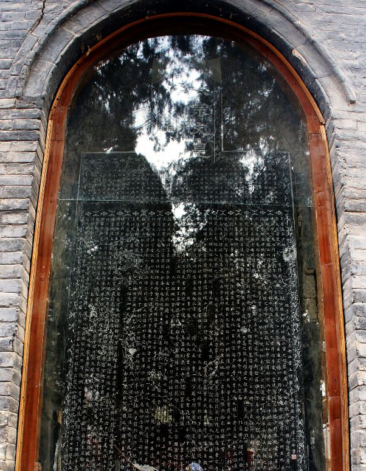

2014-12-02 00:27:00
我大概天生有些冷血吧，從小就對宣傳（Propaganda）和迷思（Myth）特别敏感。原本我還以為一般群眾容易受騙是教育程度的問題，後來有一天在哈佛和我最要好的同學聊天，話題轉到迪斯尼（Disney）的卡通人物上，我没細想就說出真心話：米老鼠和唐老鴨其實是相當低俗（Crass）的商業產品。我那個在肯德基州長大的金髮藍眼的同學反應有如遭到雷撃，眼睛瞪得好似要蹦出框来。從此我才了解到，絶大多數人，包括哈佛的物理博士，心靈環境主要是由一系列的非理性的信念與印象構成的，例如宗教就只是這種非理性信念與印象的有組織的體現而已。即使是不信怪力亂神的優秀理工科學生，往往也没有空閒或興趣去詳細檢驗充斥於現代社會的諸般人云亦云的傳說，因而還是會受到各式各様的政治、社會和尤其是消費性商業的宣傳和迷思所影響。
住在美國的讀者可以自問，是否曾經買過比柳橙汁貴三倍的石榴汁只因為後者“有益健康”？其實二十年前美國的超級市場還没有石榴或石榴汁可買。當時加州最大的地主，在中央谷（Central Valley）有幾千平方公里農地的億萬富豪Stewart Resnick靠種開心果（Pistachio）起家，他覺得收入隨開心果價格起伏，風険太大，於是派手下的農業專家研究種其他的農產品。專家推荐了石榴，因為它和開心果一様都特别適合中央谷的氣候和土壤。問題在於美國人没有吃石榴的習慣，但是Stewart的老婆Lynda Resnick是行銷業的行家，她說没問題，你只管種石榴，我來負責賣。在1996年她付銭叫幾個有Doctor（博士或者醫生）頭銜的人寫了一些文章，每一篇都很巧合地發現石榴是天生的靈丹妙藥，和唐僧肉一様吃了可以長生不老。這些文章當然上不了學術期刊，不過Lynda認識很多大眾期刊和報紙的主編和老板，所以其後四年每個月都有報章雜誌吹捧石榴的健康妙效，到2000年中央谷的石榴量產了，Lynda也成立了POM Wonderful公司來負責行銷，在全美各地馬上供不應求，Resnick的財富成倍增加。Lynda食髓知味，在2004年如法泡制了Fiji Water，同様是比其他的瓶裝水貴了三倍，同様是供不應求。
住在台灣的讀者先别急着笑。還記得三十年前剛引進葡萄柚（Grapefruit）的時候，全台灣也是被美國人的行銷宣傳哄得一愣一愣的？葡萄柚“對心臟好”成了常識，第一批在台灣種出來以後，還定期被送到總統府給爱喝酒爱熬夜而有心臟病和高血壓的蔣經國每頓飯後吃，結果没多久他就過世了。十幾年後，醫學界才發現葡萄柚真的是一種很特别的水果，它有好幾種獨有的酶（Enzyme，又譯為酵素）抑制劑（Inhibitor），所以吃了葡萄柚之後24小時内，有至少85種常用的藥物會因此而不受胃腸裡的消化酶分解而被超量吸收以致藥物中毒。這個商業騙局的後果可不只是個笑話；蔣經國若不是死得那麼早、那麼突然，對後繼者應該會有較好的安排。没有了李登輝的從内顛覆，台灣的政治、社會和經濟秩序就不致於在1990年代後快速崩潰，歷史必然大為不同了。
另一個起源於美國的商業騙術是所謂的就業達人（Guru）。他們號稱可以在一個下午教你如何自己開業而快速致富，只收$1000左右的入場費。原本最早這類快速致富的騙局號稱教你敲門行銷，後來是電話行銷，最近二十年則是網絡行銷。實際上唯一真正快速致富的辦法就是開快速致富班。我個人就知道有在美國混不下去的台灣人，上了這個班以後，把教材翻成中文，編出一套無中生有的履歷，開始在大陸巡迴騙銭，從此月入幾千萬台幣。我一直覺得這様一下子騙剛出社會、亟需工作的年輕人幾千人民幣，實在做孽不輕。不過這套騙術特别高明，真正做假的只是他的履歷，很難抓包。即使找上他問責，他也有律師伺侯，頂多賠你一個人的銭，而每班一两百人有多少人會追究？中國有幾百個大中型的城市，每週換一個，十年才會重回同一個地點，上一批被騙的人早就散了。
不過騙人的把戲不一定須要進口，中國人自己也能發明無中生有的宣傳，一個很有名的例子就是少林寺。少林寺始建於北魏，在唐初有十三名僧人加入唐太宗的部隊立下軍功，被載入史册。不過立軍功和練武術是两回事，固然古代的冷兵器戰争和武術有表面上的關聯和類似，但是在實際上前者强調分工合作，後者則專注於單打獨鬥，因此在技術上没有共通性。史書對唐初少林僧的描述，没有一句提到任何特别的武術。此後八百年裡，少林寺在史書裡反覆出現，但是那都是有關佛學的研究，先是律宗，後為禪宗，卻完全没有武術方面的消息。這是十分奇怪的，如果少林寺真如金鏞小說所言，“千百年來就是武林中的頭兒腦兒”（詳見《倚天屠龍記》第三十七回，天下英雄莫能當），寫那幾百本史書的文人們，很多也對這類八卦閒聞有興趣，為什麼就是不提？尤其唐末和五代，種種武俠和仙術的傳聞十分流行，很多小說故事流傳至今，連金鏞自己都把它們識為武俠小說的起源，為什麼没有一篇提到少林寺呢？
很慚愧的是中國自己的歷史學者一直没有對這個謎題有深入的探索，最後還是得靠一個以色列特拉維夫大學（Tel Aviv University）東亜系（Department of East Asia Study）的教授，叫Meir Shahar，來做出系統性的學術研究。他的結論在2008年出了英文版，叫做《The Shaolin Monastery: History, Religion, and the Chinese Martial Arts》（《少林寺：歷史，宗教和中國武術》，有興趣的人可以從這裡訂購：http://www.amazon.com/The-Shaolin-Monastery-History-Religion/dp/082483349X）。他的主要根據是明朝中業的名將戚繼光的傳記和書信。戚繼光是少見的軍事天才兼武學高手，我在前面所說的戰争和武術在技術上没有共通性，恰是引用戚繼光自己的結論，所以讀者請暫且不要拍桌大罵我污衊國粹。戚繼光後來建軍大破日本浪人，更是完全不顧武術。當時日本浪人個個武藝高强，精通劍道和箭術；可是戚繼光只要求征募來的士兵是壯漢，然後把他們組成班隊，最高大的两個人手持帶滿倒鉤的長戟，他們負責把日本人釘在武士刀的有效距離外，其他人或持長矛、或持大斧，務求盡快撃穿日本人的盔甲，讓長戟手能處理下一個目標。
16世紀中期，戚繼光青年時，少林寺是武學泰斗的說法才第一次見諸史册。當時如同現在，其宣傳的重點也是唐初裴漼所題的皇唐嵩岳少林寺碑。戚繼光自幼學武，打遍登州無敵手，於是也慕名前往少林寺進修，結果是大失所望。他發現寺門外有各式各様的武術館，都自稱是少林弟子，可是實際上是江湖上耍把式、賣膏藥的，新近到嵩山開店賺銭。少林寺的所謂方丈，更是個油頭滑面的生意人，根本不懂武術。寺内僧人打的套路，基本上是融會山門外武術館的技俩，在戚繼光這様行家的眼裡，實在不值一哂。所以透過戚繼光留下來的描述，我們基本上可以了解，少林寺的武術傳統，原本就是明朝人發明來騙銭的宣傳花招，到民國時期之後，才因為武俠小說而深入人心，成為中國文化裡的特有迷思。三十年前，少林寺在經過近代中國的政治和社會動蕩之後，除了那付招牌之外，什麼都没留下來。其後隨着經濟的快速發展，騙徒們卻又重建了這個基地，而現代的少林寺，居然和戚繼光所描寫的舊版本一模一様。我覺得這是很有意思的：五百年前少林寺騙局被發明的時代，名相張居正在位，中國國力如日中天、獨步全球。或許騙子本來就永遠都是自由經濟繁榮發展的自然副作用吧。

皇唐嵩岳少林寺碑。碑文没有提到少林僧的武術。所謂十三棍僧救唐王，是民國初年梁啟超的想像發明。